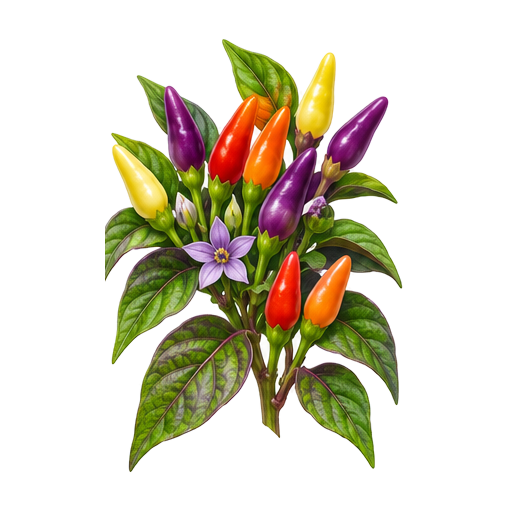
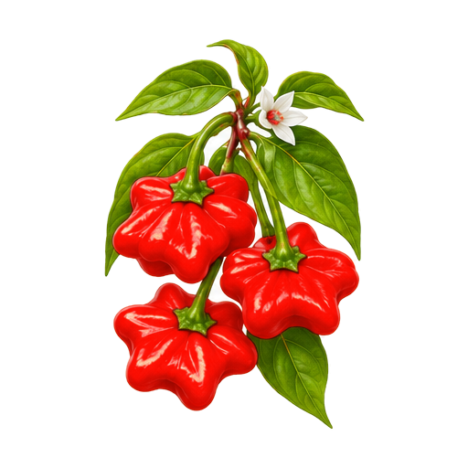
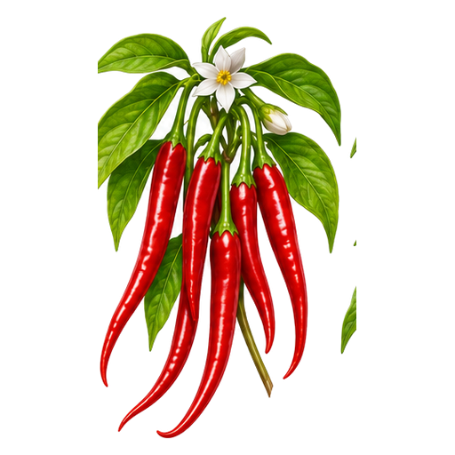
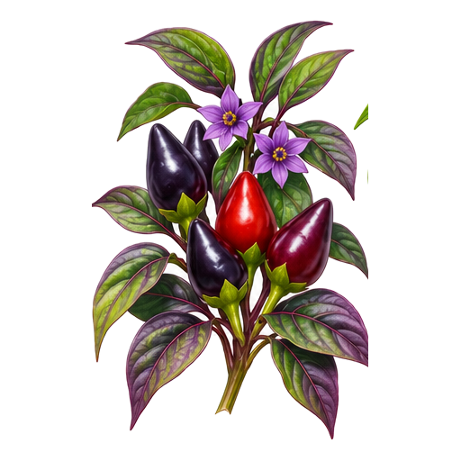
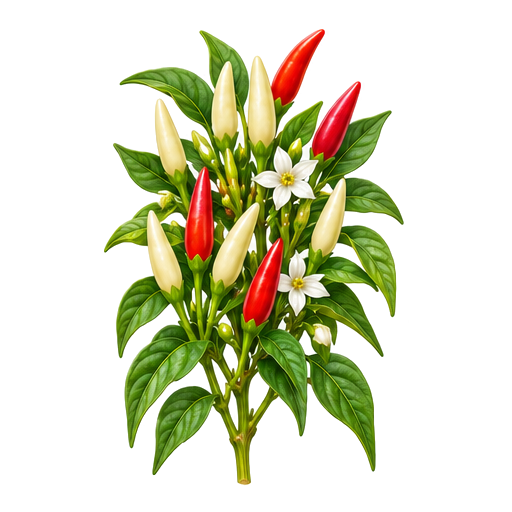
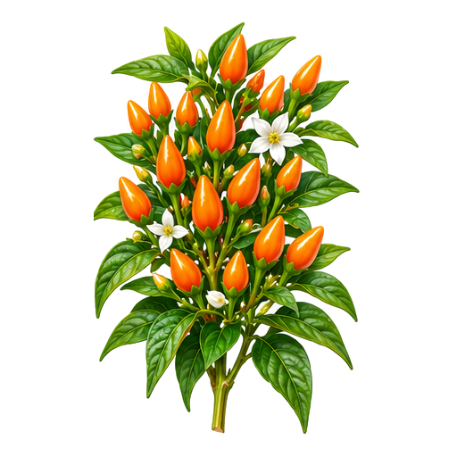
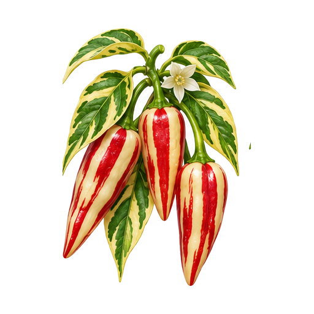
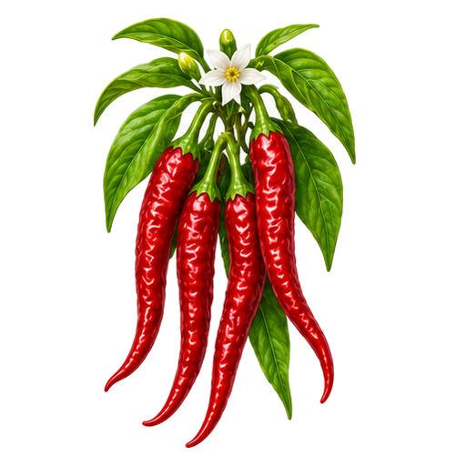

121 — Scarlett's Chilli Variegated
Concept onlyPNGUnreviewed concept placeholders. Reused earlier illustrations, not accurate cultivar depictions. All PNGs are individually addressable.









